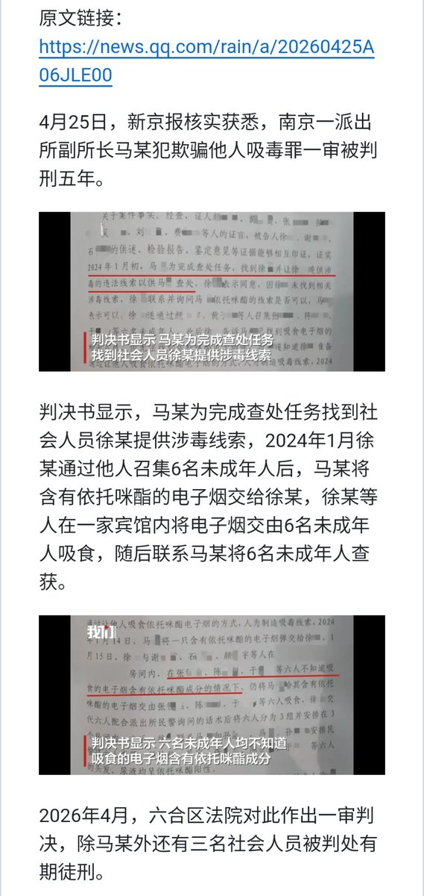
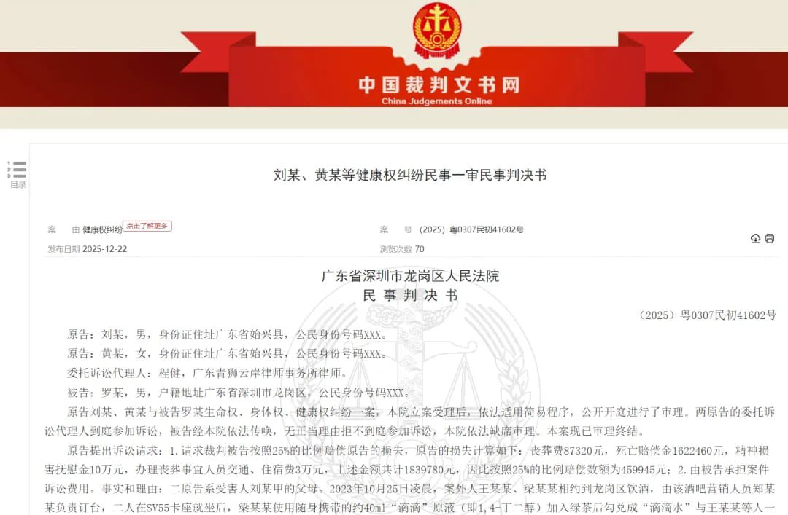
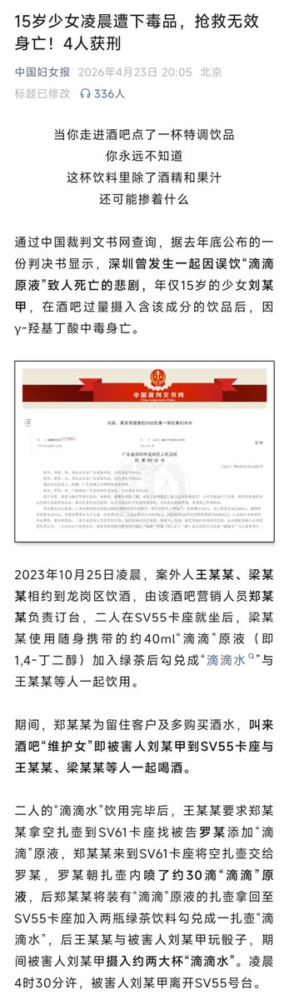
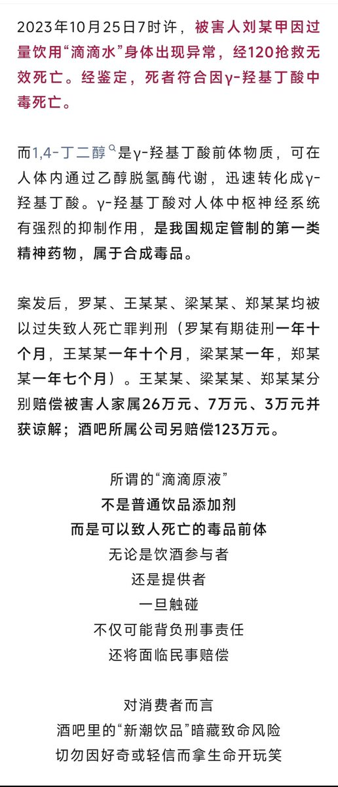

这件事情可以结合前几天刚刚爆出的那件警察“钓鱼执法”事件来看(警察提供毒品，诱导他人吸毒，然后自己去抓人)。
法律未能充分保护受害者，也未能充分惩罚该受罚的人。甚至法律自身沦为了坏人的作案动机和“凶器”，这种情况令人感叹。

法律未能充分保护受害者，也未能充分惩罚该受罚的人。甚至法律自身沦为了坏人的作案动机和“凶器”，这种情况令人感叹。




【15岁少女酒吧配侍，被喂投迷奸水“滴滴原液”身亡：涉案者最高获刑才一年十个月？】4月27日消息，通过中国裁判文书网查询，据去年底公布的一份判决书显示，深圳曾发生一起因误饮“滴滴原液”致人死亡的悲剧，年仅15岁的少女刘某甲，在酒吧过量摄入含该成分的饮品后，因y-羟基丁酸中毒身亡。 https://t.co/Eup0ufNjhj